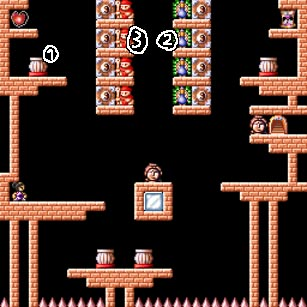
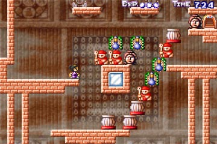
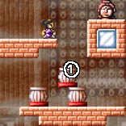
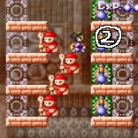
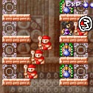
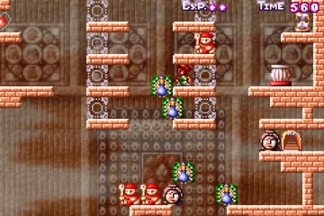

ＭＩＲの友人がクリアできなくて、
メールを送ってきたマップです。
|  | ４－１５ 白黒共通 敵・経験値アイテムがないので、 ということで、サクッといってみよゥ。 |
|  | このマップは、先に完成図を見てもらった方が わかりやすいと思います。 これが完成図です。 どのオブジェクトを、どの位置に積み上げるかが、 |
 |
 |
 |
| まず、土台つくりです。 ”１”のブロックを落としてきて、 土台を組み上げます。 |
次に、画面上部の、赤地蔵の オブジェクトを、図のように組み上げ、 ”２”の孔雀のオブジェクトを、右に落とします。 |
次に、”３”のオブジェクトを、 図の位置まで押します。 |
|  | さらに、完成直前のスクリーンショットです。 あとは、上のほうに残っているオブジェクトを、 敵キャラがいないので、攻略方法さえわかれば |